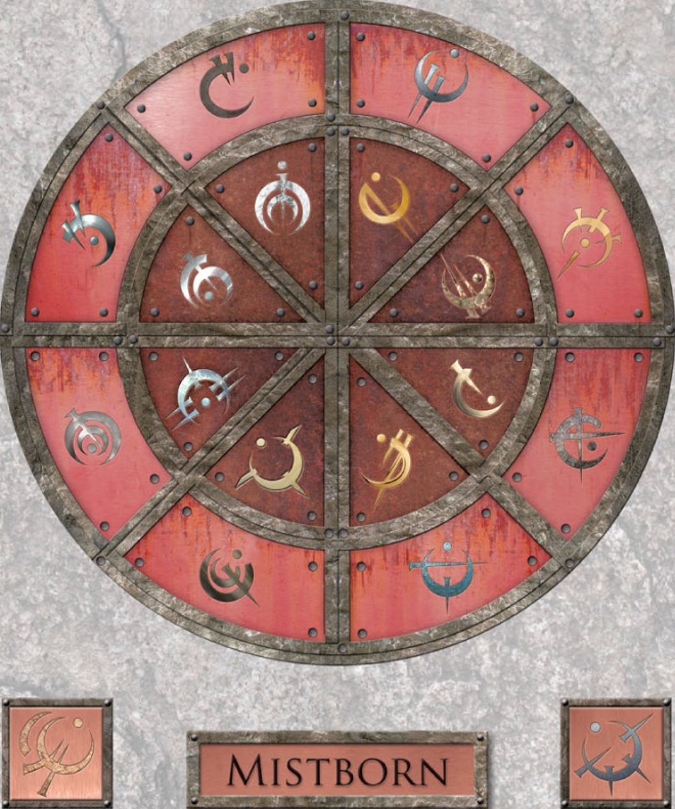

En el sistema Scaldriano en Scadrial, su planeta más importante, hace milenios se establecieron las esquirlas de Ruina y Conservación (posteriormente fusionadas en Armonía en La Batalla de Hathsin), dando 3 tipos de manifestaciones de Investidura conocidas como las tres artes metálicas: la Alomancia, la Feruquimia y la Hemalurgia.
La Alomancia es una de las tres artes metálicas que permite quemar metales previamente ingeridos. Las personas con esta capacidad se conocen como alomantes. Existen dos tipos principales: brumosos (solo tienen la capacidad de quemar un metal) y nacidos de la bruma (tienen la capacidad de quemar todos los metales).
Los metales que pueden ser quemados se dividen en dos grandes grupos: Metales Alománticos y Metales Divinos.
Existen 16 Metales Alománticos y los podemos dividir en 4 grupos: Físicos, de Mejora, Mentales y Temporales. Cada metal alomántico tiene asociada una pareja, compuesta por un metal puro y una aleación de este. El primero se clasifica con la habilidad de tirar y el segundo con la habilidad de empujar. Cada grupo está compuesto por dos parejas: una de metales externos (interactúan con cosas fuera del cuerpo) y otra de metales internos (interactúan directamente con el alomante).

Estos metales no encajan en las divisiones de los Metales Alománticos. No son compuestos metálicos normales, son la forma condensada y sólida de Investidura Pura. Cada una de las 16 esquirlas (y sus fusiones, como es el caso de Armonía) tienen un metal divino. Solo se sabe el poder alomántico del Atium (metal de Ruina), del Lerasium (metal de Conservación) y de algunas de sus aleaciones.
Atium:
Lerasium:
Malatium:
Aquí hablas de Ruina, Conservación, Honor, Cultivación, Odium...